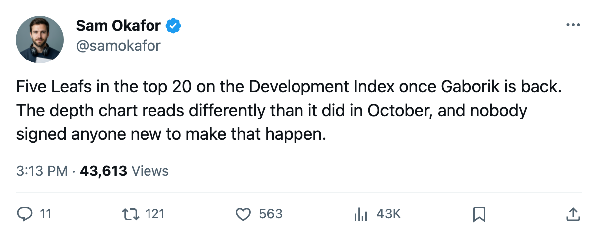

FLA
FLAWeek Ahead: 14 days to Gaborik, 2 games to open the trip, and a Rangers club on a slide
Toronto visits Philadelphia Monday, hosts New York Wednesday, then drops into the Southeast for 4 straight on the road.
 Sam OkaforLeafs beat reporter · Queen City Telegram
Sam OkaforLeafs beat reporter · Queen City TelegramThe piece
 Toronto Maple Leafs visits
Toronto Maple Leafs visits  Philadelphia Flyers on 2005-12-12, the first of 5 games in 8 days. The season series reads 2-0-0 for Toronto, 8 goals to 5. Philadelphia is 10-11-2 with 28 points, 4th in the Atlantic, missing
Philadelphia Flyers on 2005-12-12, the first of 5 games in 8 days. The season series reads 2-0-0 for Toronto, 8 goals to 5. Philadelphia is 10-11-2 with 28 points, 4th in the Atlantic, missing  Marco Sturm85 to a leg until 2005-12-30 and
Marco Sturm85 to a leg until 2005-12-30 and  Chris Therien73 to a foot until 2005-12-29.
Chris Therien73 to a foot until 2005-12-29.
The Rangers come to the Air Canada Centre
 New York Rangers visits on 2005-12-14. New York leads the Atlantic with 43 points in 31 games but is in the middle of a 3-game losing streak, the most recent a 5-3 loss at
New York Rangers visits on 2005-12-14. New York leads the Atlantic with 43 points in 31 games but is in the middle of a 3-game losing streak, the most recent a 5-3 loss at  Boston Bruins on 2005-12-08 where the shots split 30-30. Toronto is 13-6 at home this season.
Boston Bruins on 2005-12-08 where the shots split 30-30. Toronto is 13-6 at home this season.
Two former Rangers are in the building.  Jamie Lundmark81 came to Toronto on 2005-05-31 and has skated on the left wing and the penalty kill all season: 20 games, 3 points, 6.2 minutes a night. His form term sits at +8 on the Bureau's Development Index.
Jamie Lundmark81 came to Toronto on 2005-05-31 and has skated on the left wing and the penalty kill all season: 20 games, 3 points, 6.2 minutes a night. His form term sits at +8 on the Bureau's Development Index.  Kenny Jonsson82 is now a Ranger.
Kenny Jonsson82 is now a Ranger.
The road opens
Atlanta first on 2005-12-16, then Florida on 2005-12-18, then Tampa Bay on 2005-12-19. Toronto is 8-1 on the road.  Atlanta Thrashers has 22 points in 26 games, 4th in the Southeast. Florida sits at 8-13-3, 27 points, 3rd.
Atlanta Thrashers has 22 points in 26 games, 4th in the Southeast. Florida sits at 8-13-3, 27 points, 3rd.  Tampa Bay Lightning leads the division with 33 points from a 12-9-5 start.
Tampa Bay Lightning leads the division with 33 points from a 12-9-5 start.
| Date | Opponent | Home/Away |
|---|---|---|
| 2005-12-12 | PHI | Away |
| 2005-12-14 | NYR | Home |
| 2005-12-16 | ATL | Away |
| 2005-12-18 | FLA | Away |
| 2005-12-19 | TB | Away |
Two men face their former clubs in Fort Lauderdale on 2005-12-18.  Roberto Luongo95 was traded to Toronto on 2005-01-25 and has started 12 games this season.
Roberto Luongo95 was traded to Toronto on 2005-01-25 and has started 12 games this season.  David Aebischer89 left Toronto on the same date and is now with Florida. Tampa the next night, where Toronto beat Tampa Bay Lightning 4-3 at home on 2005-12-03.
David Aebischer89 left Toronto on the same date and is now with Florida. Tampa the next night, where Toronto beat Tampa Bay Lightning 4-3 at home on 2005-12-03.
14 days to Gaborik
 Marian Gaborik99 returns 2005-12-25. The Bureau's Development Index has him at +11, the second-highest form term in the league behind Nedorost at +12. His overall reads 99 on a base of 91. In 17 games before the leg injury he carried 6 goals and 8 points in 22.6 minutes a night at $11.90M over 5 remaining seasons.
Marian Gaborik99 returns 2005-12-25. The Bureau's Development Index has him at +11, the second-highest form term in the league behind Nedorost at +12. His overall reads 99 on a base of 91. In 17 games before the leg injury he carried 6 goals and 8 points in 22.6 minutes a night at $11.90M over 5 remaining seasons.
The Leafs will carry 5 players in the Development Index's top 20 once Gaborik is back: he leads at +11, with  Stanislav Chistov87 at +8,
Stanislav Chistov87 at +8,  Rostislav Klesla87 at +8, Lundmark at +8, and
Rostislav Klesla87 at +8, Lundmark at +8, and  Rick Nash85 at +7. No other club has more than 3 in the top 20 this edition.
Rick Nash85 at +7. No other club has more than 3 in the top 20 this edition.
Petr Chlup87 leads the team with 20 points in 28 games at 20.9 minutes a night, one more than  Mats Sundin92. Chistov and
Mats Sundin92. Chistov and  Alexander Mogilny89 are at 18 each.
Alexander Mogilny89 are at 18 each.  Maxim Afinogenov86 has 12 goals, the team high, in 18.0 minutes a night.
Maxim Afinogenov86 has 12 goals, the team high, in 18.0 minutes a night.
